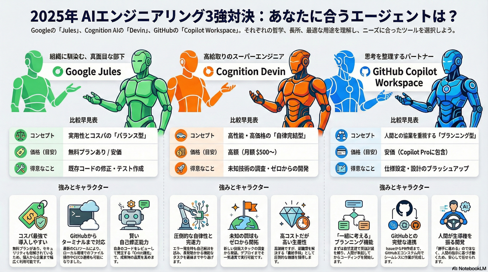

AIパートナーへの進化：Jules最新アップデート
Googleの自律型コーディングエージェント「Jules」が、単なるGitHubボットから「AIパートナー」へと進化を遂げました。
Gemini 3 Proを搭載し、複雑なタスクの計画・実行能力が飛躍的に向上。さらにJules Tools (CLI) APIにより、あらゆる開発環境からの利用が可能になりました。
ハイライト
今回のアップデートは、モデル性能の向上、利用形態の拡張、そして開発者体験（DX）の改善の3点が主軸です。
特に、リポジトリ不要でタスクを開始できる機能や、リポジトリごとの文脈を記憶するメモリ機能は、日々の開発フローを劇的に効率化します。
詳細と主な特徴
JulesはWeb UIの枠を超え、ターミナルやCI/CDパイプラインなど、開発者が普段利用するツールチェーンに深く統合されるようになりました。
重要ポイント
モデルの進化
Gemini 3 Pro搭載により、複雑なタスクの計画精度と指示追従性が飛躍的に向上。
利用形態の拡張
Jules Tools (CLI) APIにより、ターミナルやCI/CDから直接利用可能に。
利便性の向上
リポジトリ不要のタスク開始（Repoless）や、長期メモリ機能によるDX改善。